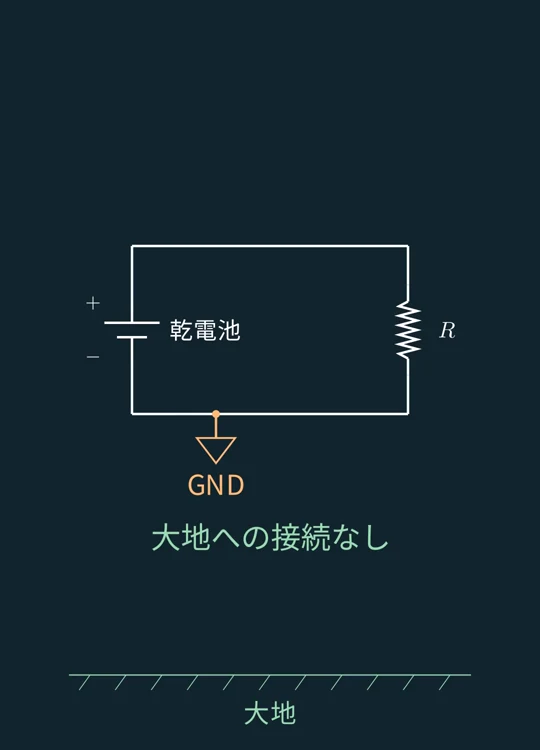
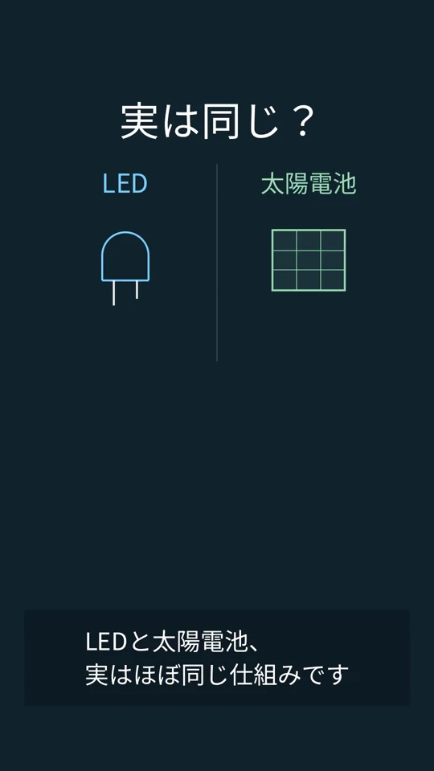
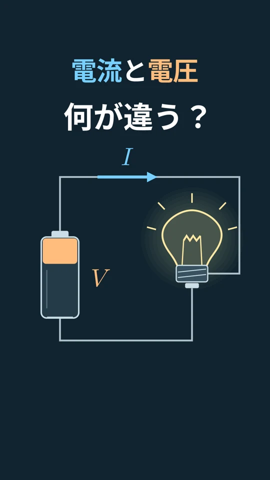

VIDEO 01 / 複素インピーダンスの正体
なぜ、電気回路に虚数？
微分と積分による振幅・位相の変化を、複素数の掛け算へ。直列RLC回路の式を、5つの場面で振り返ります。
動画と解説を見る →
電気回路と数学 / STUDY NOTES
授業で出会う「なぜ？」を、一つずつ。
動画でつかんで、図と短い解説でおさらい。
理工学生のための、もうひとつの補講です。
動画を見て、画像と短い解説でおさらい。
VIDEO 01 / 複素インピーダンスの正体
微分と積分による振幅・位相の変化を、複素数の掛け算へ。直列RLC回路の式を、5つの場面で振り返ります。
動画と解説を見る →
VIDEO 02 / 集中定数回路
信号が伝わる時間から、いつもの回路図を使える条件へ。集中定数回路の考え方を、6つの場面で振り返ります。
動画と解説を見る →
VIDEO 03 / GND・帰線・アース
GNDは0ボルトの基準、帰線は電流の帰り道、アースは大地との接続。同じ配線を使うことがあっても、役割は別です。
画像と解説を見る →
VIDEO 04 / LEDと太陽電池
電気から光へ、光から電気へ。電子・正孔と光の共通したやり取りを、ほぼ逆方向に使う仕組みを振り返る。
画像と解説を見る →
VIDEO 05 / 電流と電圧
断面を通る電子の量と、電子1個のエネルギー差。同じ電子を見る二つの見方から、回路とオームの法則へ。
画像と解説を見る →電圧と電流、交流とインピーダンス。回路図と数式を結びつけながら、その振る舞いを考えます。
複素数や微分・積分。工学を支える数学を、図形や変化のイメージとともに捉えます。
電気回路や数学を、図と映像から考えるチャンネルです。動画で出会った式や考え方を、このサイトでは画像と短い解説で振り返れます。
YouTubeで動画を見る